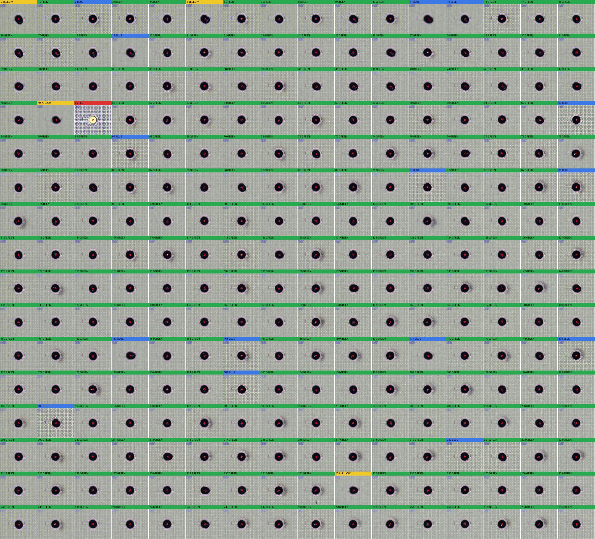

NW is enlarged here for review. ETROC2 threshold calibration expects NW < 10, but NW anomalies should be cross-checked with optical/X-ray evidence before final bump-bonding judgment.
Optical inspection montage

X-ray full-chip image
No X-ray image mapped for this chip yet.
NW scan result
No NW scan mapped for this chip yet.
X-ray detail crops
No X-ray detail crop mapped for this chip.
No X-ray note